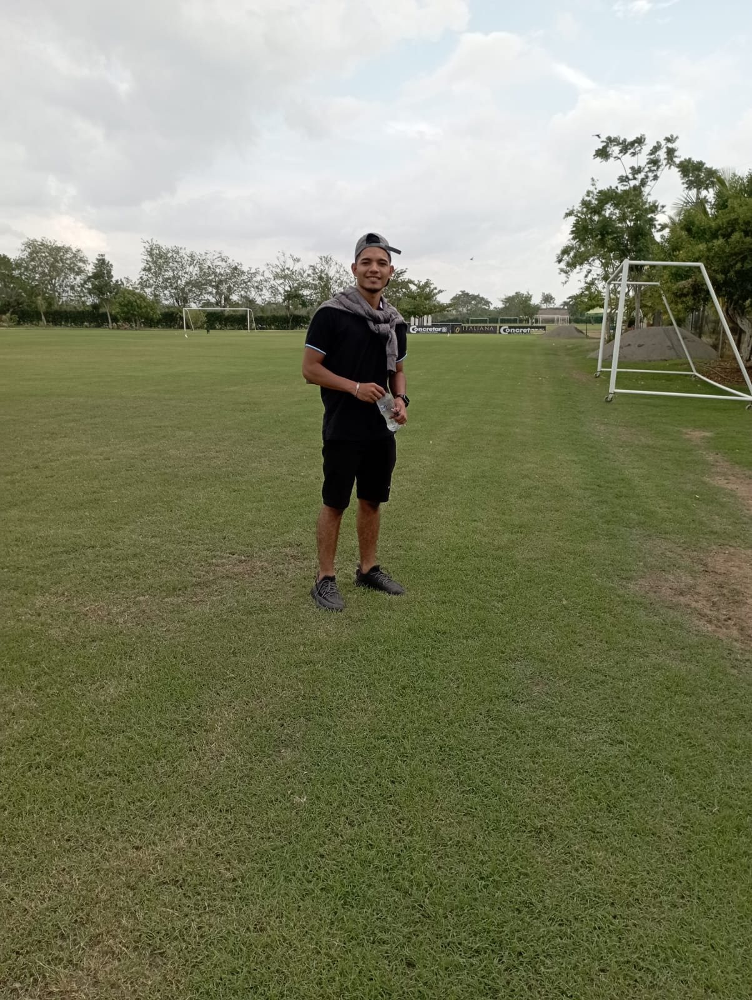

Curriculum
Soy estudiante de ingeniería de sistemas con formación técnica en sistemas y redes y en programación de aplicaciones y servicios para la nube. Experiencia en desarrollo web y en desarrollo back-end, con manejo de control de versiones. Apasionado por la tecnología y el aprendizaje continuo, con habilidades para resolver problemas y trabajo en equipo.
Experiencias
- Instituto Tecnologico San Agustin ( Feb 2022 - Dec 2022) - Monitor
Estudios
- Coorporacion Unificada de Educacion Superior - CUN
Estudiante de 5° Semestre en Ingenieria de Sistemas
- Servicio Nacional de Aprendizaje - SENA
Etapa Productiva
- Instituto Tecnologico San Agustin
Graduado
Certificados
- Certificados - Alura Cursos Certificaciones
- Certificados- Cisco Certificaciones
Hoja de Vida
- Hoja de Vida - CV
Proyectos
